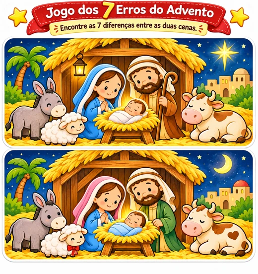
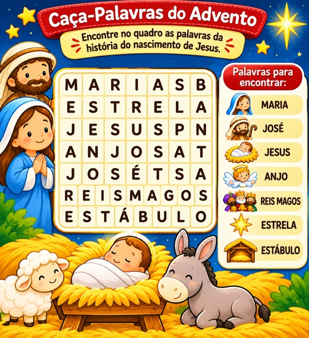

Mais momentos em família
Atividades para pais e filhos compartilharem experiências especiais.
24 dias de fé e diversão
24 dias de atividades divertidas para descobrir o verdadeiro significado do Natal, conhecer a história de Jesus e criar memórias especiais em família.
Um Advento Natalino cheio de fé, amor e diversão por apenas R$ 19,90!
Quero viver esse Natal especial! Material digital em PDF · Para imprimir em casa · Atividades para toda a família

Prévia do PDFEntre a correria de dezembro, os preparativos e tantas distrações, que tal reservar alguns minutinhos por dia para viver o verdadeiro sentido do Natal com seu filho?
Com o nosso Advento Natalino, cada dia se transforma em uma oportunidade de aprender, brincar, conversar e fortalecer os laços da família.
Atividades para pais e filhos compartilharem experiências especiais.
Brincadeiras e desafios que incentivam a imaginação.
Uma maneira leve e divertida de apresentar a história do nascimento de Cristo.
Uma jornada de descobertas, aprendizado e diversão para preparar o coração das crianças para o nascimento de Jesus.
E isso é só um gostinho do que espera por vocês!
Quero todas as atividades por R$ 19,90!Faça a compra online por apenas R$ 19,90.
Acesse o PDF conforme as instruções de entrega da plataforma de pagamento.
Prepare as atividades e aproveite momentos especiais com as crianças durante o Advento.
Dezembro se aproxima! Prepare agora as atividades que vão tornar essa época ainda mais especial para sua família.
O Advento já começou! Ainda dá tempo de viver momentos especiais em família.
Quero me preparar para o Advento!Imagine seu filho esperando ansiosamente pela atividade do dia. Vocês se sentam juntos, descobrem uma nova história, dão risada, conversam e criam lembranças que vão muito além do Natal.
Mais do que atividades para imprimir, este Advento é um convite para desacelerar e viver o nascimento de Jesus com alegria e significado.
Quero esse presente para minha família!Leve para casa uma jornada de fé, diversão e momentos inesquecíveis.
Um pequeno investimento para criar grandes memórias.
♧ Compra segura · Produto digital
É um produto digital em PDF, para você acessar e imprimir.
Você pode imprimir as atividades conforme a necessidade da sua família.
Sim. O material foi desenvolvido para celebrar o Natal com foco no nascimento de Jesus.
O acesso será disponibilizado conforme o processo definido pela plataforma de pagamento.
Sim, você pode compartilhar o material com mais de uma criança.
Esse advento é recomendado para crianças de 3 a 6 anos.
Prepare o coração das crianças para celebrar o nascimento de Jesus com atividades especiais, momentos em família e muita alegria.
Quero começar nosso Advento!Apenas R$ 19,90 · Material digital em PDF